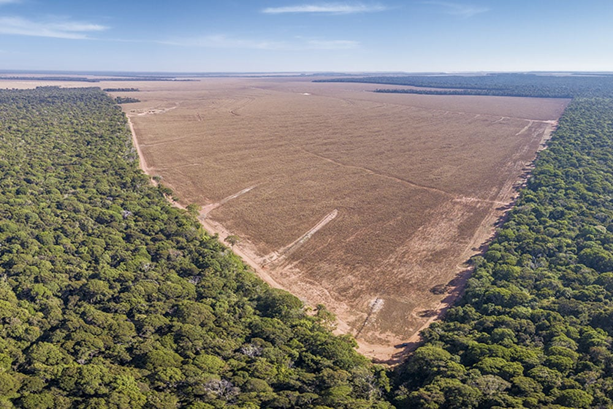
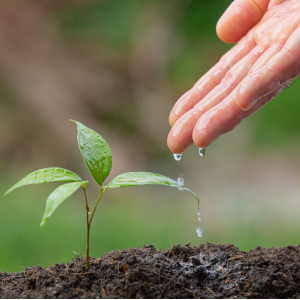
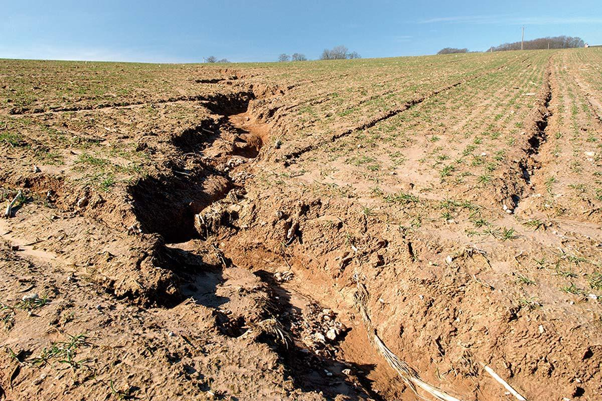

O Que é o Desmatamento?
O desmatamento, ou desflorestamento, consiste na remoção da cobertura florestal de uma área, seja ela por corte raso ou por outros métodos. Essa prática, muitas vezes motivada por atividades econômicas, acarreta uma série de impactos negativos.
 Exemplo de área afetada pelo desmatamento.Principais Desvantagens do Desmatamento
-
Perda de Biodiversidade
Florestas são habitats de inúmeras espécies de plantas e animais. O desmatamento leva à destruição desses habitats, resultando na perda de biodiversidade e no aumento do risco de extinção de espécies.
 -
Emissão de Gases de Efeito Estufa
As árvores absorvem dióxido de carbono (CO₂), um dos principais gases responsáveis pelo efeito estufa. O desmatamento libera esse carbono armazenado na atmosfera, contribuindo para o aquecimento global e as mudanças climáticas.
-
Degradação do Solo e Erosão
A vegetação protege o solo contra a erosão causada pela chuva e pelo vento. A remoção das árvores deixa o solo exposto, tornando-o mais vulnerável à degradação, ao deslizamento e à perda de nutrientes.
 -
Impacto no Ciclo da Água
As florestas desempenham um papel crucial no ciclo da água, influenciando a evaporação, a formação de nuvens e a ocorrência de chuvas. O desmatamento pode levar à redução das precipitações e à desertificação.
-
Consequências Sociais e Econômicas
Comunidades que dependem das florestas para sua subsistência, como indígenas e ribeirinhos, são diretamente afetadas pelo desmatamento. Além disso, a perda de recursos naturais pode ter impactos negativos na economia a longo prazo.
O Que Podemos Fazer?
Combater o desmatamento é um esforço coletivo. Algumas ações importantes incluem:
- Apoiar práticas de manejo florestal sustentável.
- Consumir produtos de empresas com responsabilidade ambiental.
- Denunciar atividades ilegais de desmatamento.
- Participar de iniciativas de reflorestamento.
- Conscientizar outras pessoas sobre a importância da preservação florestal.